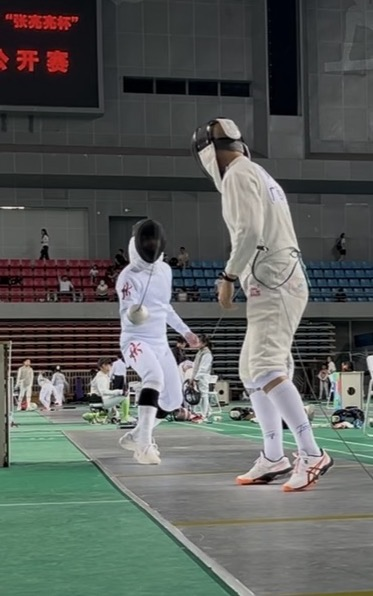
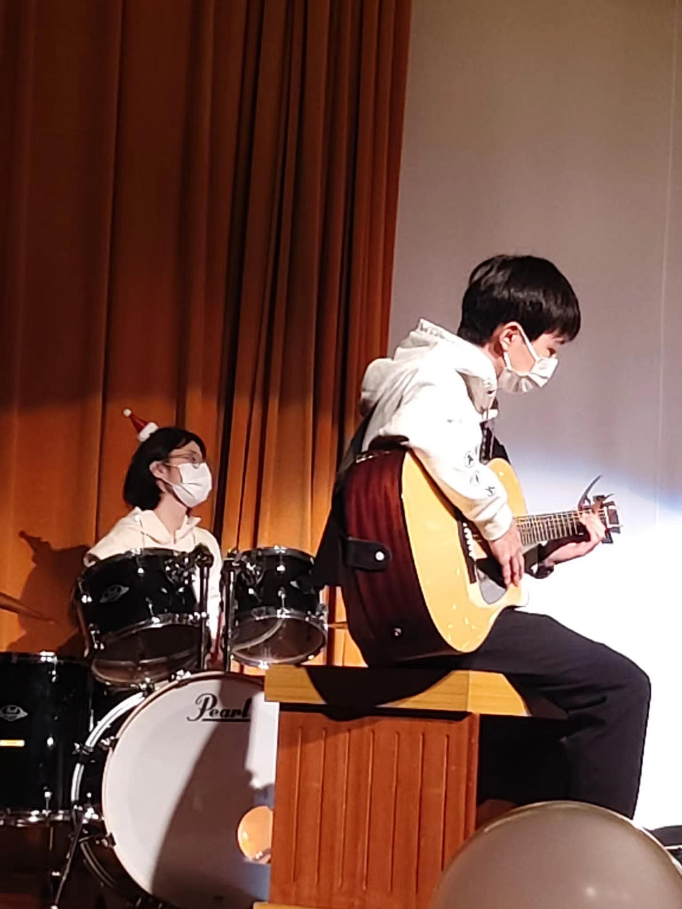

|
Wangpok Tse (谢宏博) Hi! I'm a year 4 undergraduate student at the University of Hong Kong, pursuing two bachelor degrees, B.Eng. in computer engineering and B.B.A. in finance. I studied at Heung To Middle School before, and entered the college through 2022 HKDSE with a score 35/42.
B.Eng. in Computer Engineering @ The University of Hong Kong Email / LinkedIn / Google Scholar / Github |
Research PublicationsMy research focuses on artificial intelligence and deep learning for 3D vision & graphics. I am exploring how these technologies can bring benefits in fields like mixed reality, robotics, and entertainment industry. In addition, I'm also interested in the domain of financial technology, developing next-generation tools for AI-driven investment strategies. |
|
|
MotionPersona: Characteristics-aware Locomotion Control
Mingyi Shi, Wei Liu, Jidong Mei, Wangpok Tse, Rui Chen, Xuelin Chen, Taku Komura Arxiv 2025 [project page] / [unity demo] / [paper] A real-time character controller that generates motion animations based on specific character traits, using a diffusion-based model trained on a diverse locomotion dataset. |
|
|
InterAct: A Large-Scale Dataset of Dynamic, Expressive and Interactive Activities between Two People in Daily Scenarios
Leo Ho*, Yinghao Huang*, Dafei Qin, Mingyi Shi, Wangpok Tse, Wei Liu, Junichi Yamagishi, Taku Komura ACM SIGGRAPH/Eurographics Symposium on Computer Animation (SCA) 2025, Vancouver, Canada [project page] / [video] / [paper] / [dataset] A multi-modal motion capture dataset featuring 241 sequences of dynamic two-person interactions, capturing speech, motions, and expressions over long durations. |
Mini ProjectsI develop and contribute to some interesting mini projects. Selected projects are highlighted below, if you like them, welcome to give a star on Github! |
|
|
Algorithmic Stock Trading Strategies
[project page]
Python implementation of trading strategies (Rule-Based Trading Strategies & Machine Learning-Based Strategies), including implementation module, backtesting module, visualization module. |
|
|
SentimentSage: A Stock Market News Sentiment Analysis AI Software with RAG
[project page] / [project report] / [website demo] The platform provides deep analysis on financial news and market sentiment. Using Natural Language Processing (NLP) models like FinBERT, combined with Retrieval-Augmented Generation (RAG) technology, it can quickly analyze financial news, extract sentiment, and generate real-time reports. |
|
|
Synthetic Anime Face Generation Using Denoising Diffusion Probabilistic Models
[project page] / [project report] A diffusion-based approach for generating anime-style faces using Denoising Diffusion Probabilistic Models (DDPMs). The method trains a U-Net architecture on an animation face dataset to iteratively transform random noise into coherent anime portraits. |
Professional Experience
- 2025.12 - 2026.06 PlayVision Games AI Computer Vision Engineer |
|
|
Honors & Awards
- 2023 - 2024 HKU Dean's Award for Engineering Student Scholarship ($10000) |
"Hello World! 🐱"Hey there! I like adventure and exploring new things! I love travelling around the World, taking photos of those amazing places! Also, I like drawing and strumming my little guitar. And I like fencing, I was a member of HKU fencing team.
Fun facts: I can speak English, Cantonese, Mandarin, and Southwestern Mandarin. I'm half HongKonger, half Sichuanese, and I lived in Zhuhai (a beautiful small city) when I was a child.


|

{kind=link}